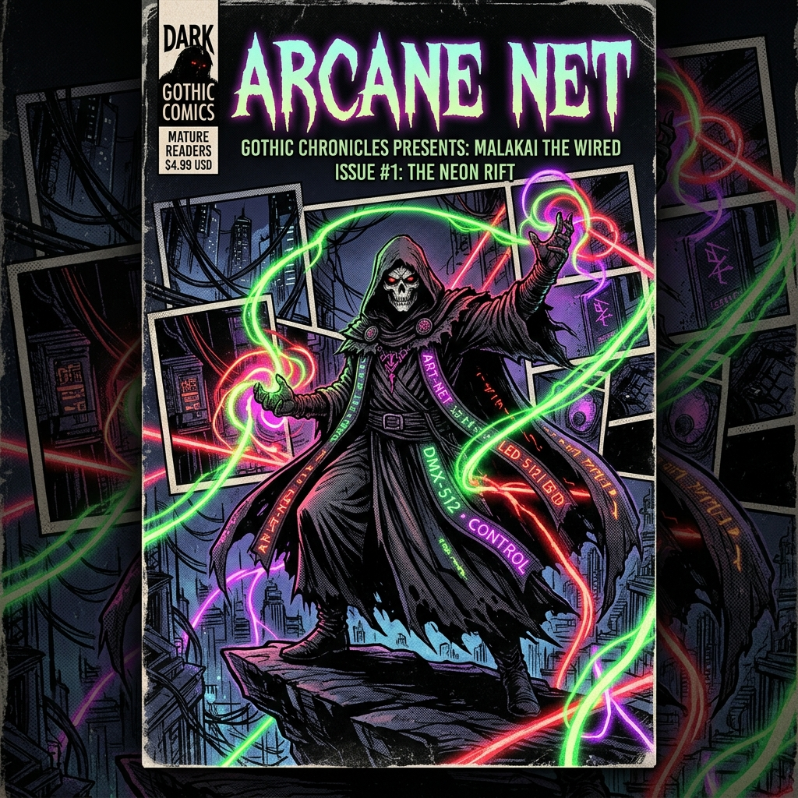

THE ART-NET CHRONICLES
BEHOLD THE NEON SORCERY OF RAW DMX OVER ETHERNET!
CHAPTER I: THE AUDIO-REACTIVE WARLOCK RAW DMX SPELLWORK

Deep in the obsidian workshop, raw system audio is harvested in real-time using fast Fourier transform (FFT) analysis. Frequencies are forged into high-speed DMX universe packets and broadcast via UDP across standard Ethernet interfaces to drive thousands of addressable LED pixels without lag!
"By the ancient protocols of Art-Net! 32 Universes bend to my command—1,250 addressable pixels pulsating to every bass drop and synth scream!"
CHAPTER II: LIVE ART-NET LIGHTING SIMULATOR BROWSER PREVIEW
Experience how the Python FFT backend transforms sound into high-speed LED pixel frames. Select visualizer modes, adjust gain & noise thresholds, or enable live microphone audio!
CLAIM THE ART-NET ARCHIVE!
Download the complete production-ready source package including Python FFT driver (audio_artnet.py), Node.js Express control dashboard (server.js), HTML web controller, and automatic network restore utilities.
CHAPTER III: THE GRIMOIRE OF SETUP INSTRUCTIONS & CODE
How the System Works
The project operates via a two-tier hybrid architecture for ultra-low-latency LED driving and easy web control:
stupidArtnet.http://localhost:3000. Changing sliders sends real-time JSON commands over internal UDP socket (Port 9999) to Python.Configuring the Ethernet Adapter
Art-Net controllers (such as Advatek PixLite, SanDevices, or DIY ESP32 Art-Net nodes) usually listen on static IP subnets (e.g. 192.168.0.100).
When launched with Administrator privileges, audio_artnet.py auto-detects your physical Windows Ethernet adapter and configures static IP 192.168.0.200 so your computer can immediately transmit Art-Net packets directly to your lights!
Python Environment Setup
Install required audio processing and Art-Net modules:
pip install stupidArtnet sounddevice numpy
Run the Python backend (starts network configuration, spawns Node server automatically, and launches web control panel):
python audio_artnet.py
Node.js Web Dashboard Setup
If running standalone without Python:
npm install express
npm start
Open your browser to http://localhost:3000 to control gain, threshold, pixel counts, and animations remotely!
Restoring Network Settings
Done playing with lights? Simply run restore_network.bat with admin privileges to instantly reset your physical Ethernet adapter back to standard DHCP auto-addressing!
.\restore_network.bat